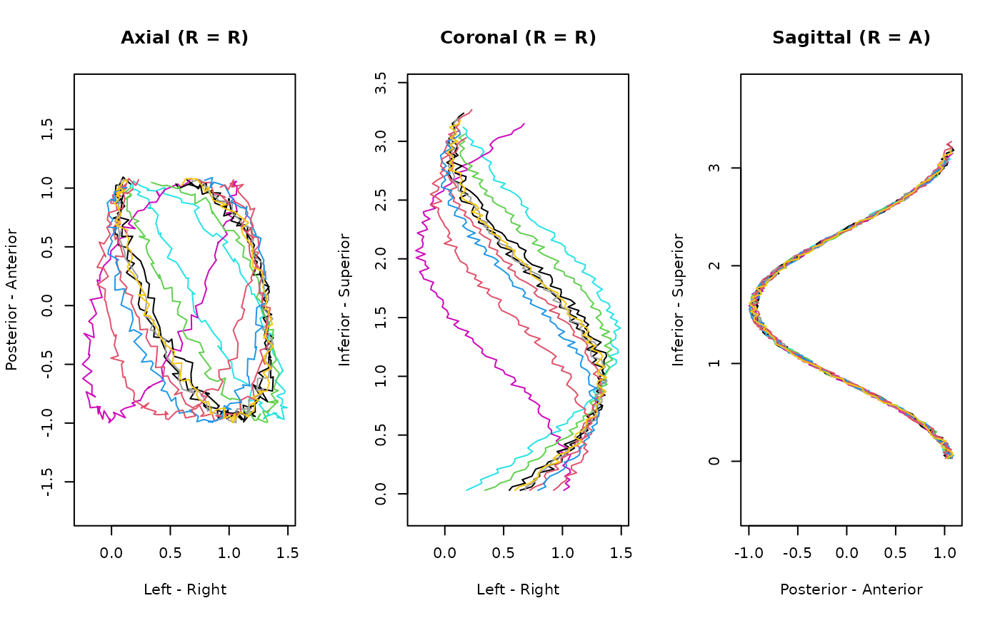

High-level functions to read and write streamlines, supporting 'TCK',
'TRK', 'TT' (read-only), 'VTK' poly-data (including
legacy '.vtk', 'XML'-based '.vtp', 'HDF5'-based '.vtpb')
Usage
read_streamlines(file, ...)
write_streamlines(
x,
con,
format = c("auto", "tck", "trk", "vtk", "vtp", "vtpb"),
...
)
as_ieegio_streamlines(x, ...)
# Default S3 method
as_ieegio_streamlines(x, vox2ras = NULL, ..., class = NULL)Arguments
- file, con
path to the streamline data
- ...
passed to low-level functions accordingly
- x
R object that can be converted into an
ieegiostreamlines instance- format
format to write to file, the file extensions must match with the format
- vox2ras
volume index to 'RAS' coordinate transform matrix; default is identity matrix and used by
'TRK'format- class
additional class to be added to the instance
Examples
# toy example
curve <- function(t) {
x <- sin(4 * t + sample(300, 1) / 100) + t + sample(seq_along(t)) / length(t) / 10
y <- cos(sin(t) + 5 * t) + sample(seq_along(t)) / length(t) / 10
z <- t * 3
cbind(x, y, z)
}
# 10 lines, each line is represented by nx3 matrix
tracts <- lapply(seq(100, 109), function(n) {
curve(seq_len(n) / 100)
})
# convert to streamline
x <- as_ieegio_streamlines(tracts)
# Display
print(x)
#> <DTI Streamlines>
#> Total streamlines: 10
#> Transforms (vox2ras):
#> [1 0 0 0]
#> [0 1 0 0]
#> [0 0 1 0]
#> [0 0 0 1]
#> Scalars (none)
#> Properties (none)
#>
plot(x, col = 1:10)

if(system.file(package = "r3js") != '') {
plot(x, method = "r3js")
}
# Subset the first line (transformed)
coords <- x[[1]]$coords
head(coords)
#> [,1] [,2] [,3]
#> [1,] 0.201120008 1.0752005 0.03
#> [2,] 0.131417986 1.0838088 0.06
#> [3,] 0.106553717 1.0198445 0.09
#> [4,] 0.131590976 1.0193405 0.12
#> [5,] 0.121593693 0.9893426 0.15
#> [6,] 0.009625857 0.9769095 0.18
# Save different formats
tdir <- tempfile()
dir.create(tdir, showWarnings = FALSE, recursive = TRUE)
write_streamlines(x, file.path(tdir, "sample.tck"))
write_streamlines(x, file.path(tdir, "sample.trk"))
write_streamlines(x, file.path(tdir, "sample.trk.gz"))
if (FALSE) { # \dontrun{
# Require Python
write_streamlines(x, file.path(tdir, "sample.vtk"))
write_streamlines(x, file.path(tdir, "sample.vtp"))
write_streamlines(x, file.path(tdir, "sample.vtpb"))
} # }
# Read formats
y <- read_streamlines(file.path(tdir, "sample.trk"))
#> TCK file is detected. Please read the following text carefully. TCKfile format has ambiguity by definition: if the file is generated fromTrackVis, nibabel, then there is a half-voxel offset, which can becorrected by setting `half_voxel_offset=TRUE`. However, if the file isgenerated from DSI-Studio, then there is no such offset, please set the`half_voxel_offset=FALSE`.
#>
#> `half_voxel_offset` is unspecified, setting to `TRUE` by default.
# Compare x and y
diffs <- mapply(
x = as.vector(x),
y = as.vector(y),
function(x, y) {
range(x$coords - y$coords)
}
)
# Should be floating errors
max(abs(diffs))
#> [1] 1.144409e-07
unlink(tdir, recursive = TRUE)